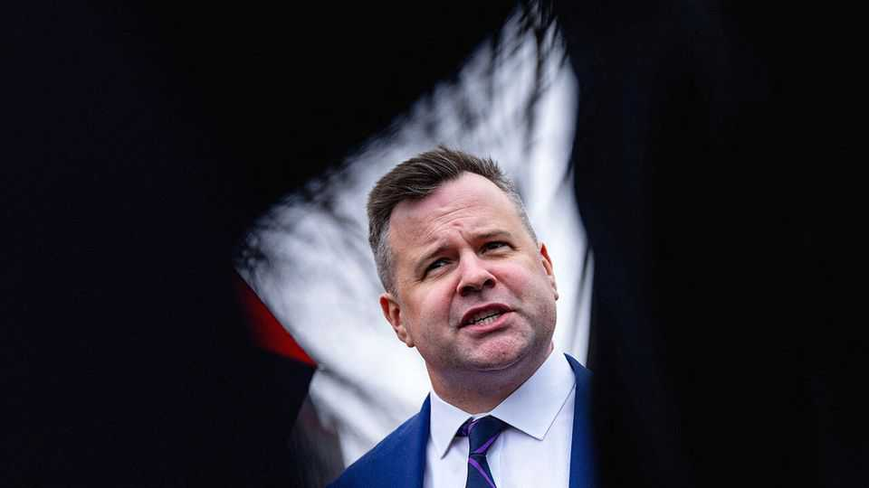

The fading influence of America’s spy co-ordinator
Bill Pulte’s appointment as director of national intelligence reflects the office’s declining stature
June 4th 2026

BILL PULTE, a 38-year-old Floridian, has run America’s Federal Housing Finance Agency for little over a year, mostly in blessed obscurity. Now he is America’s top spy. This might sound like the plot of a screwball comedy. Unfortunately it is not.
On June 2nd Donald Trump appointed Mr Pulte, whose previous experience includes stints in home construction and private equity, to serve as acting director of national intelligence (DNI). Mr Pulte will succeed Tulsi Gabbard, a former congresswoman who resigned on May 22nd, citing her husband’s ill-health. Ms Gabbard, a long-standing anti-war advocate, had been sidelined from most important foreign-policy debates, including the decisions to attack Venezuela and Iran.
Mr Pulte does not carry the same ideological baggage as Ms Gabbard, whose views on Syria, Russia and Iran had made her an outlier in the Republican Party. But he is nonetheless strikingly unqualified for the job. The position of DNI was created 21 years ago, after the 9/11 attacks, to co-ordinate the work of America’s sprawling intelligence bureaucracy, whose constituent agencies were once poor at sharing secrets with one another.
The law that established the Office of the Director of National Intelligence (ODNI) specified that anyone nominated to lead it “shall have extensive national security expertise”. Every prior DNI has been either a former intelligence official, military officer or elected official. Mr Pulte is none of these things. His main qualifications for the role make sense only in MAGA-land.
The president has not said whether he intends to nominate Mr Pulte for the role on a permanent basis. That would require confirmation by the Senate, which could prove difficult. In 2019 Mr Trump chose John Ratcliffe, then a congressman, to be DNI. Mr Ratcliffe had sat on various national-security committees, including the House Permanent Select Committee on Intelligence. Yet Mr Trump withdrew the nomination after questions arose about Mr Ratcliffe’s qualifications. (He later secured the job and is now director of the CIA.) By comparison with Mr Ratcliffe, Mr Pulte is an intelligence neophyte.
His lack of qualifications would not be the only obstacle to Senate confirmation. Mr Pulte has appeared eager to use his access to privileged information to target figures who have drawn Mr Trump’s ire. Last year he accused Lisa Cook, a member of the Federal Reserve Board, Adam Schiff, a Democratic senator, and Letitia James, New York’s attorney-general, of mortgage fraud, referring their cases to the Justice Department. He also went after Jerome Powell, the Fed’s chairman, whom Mr Trump was then seeking to remove.
Mr Pulte’s willingness to weaponise his office is not unusual in this administration. Nor, increasingly, is the politicisation of the ODNI. Ms Gabbard caused an outcry earlier this year when she attended an FBI raid on a Georgia election centre which was the focus of Mr Trump’s false claims that the 2020 election had been stolen. She also implemented Mr Trump’s directive to create a “Weaponisation Working Group” to co-ordinate complaints against the nefarious Biden administration.
The prospect of Mr Pulte overseeing America’s intelligence apparatus has alarmed some senators. Mark Warner, the Democratic vice-chairman of the Senate intelligence committee, accused Mr Trump of choosing “an official who has demonstrated not just willingness but eagerness to use the authorities of government to pursue political retribution”. Mr Pulte, he added, appeared to have been selected “because the White House believes he will provide the narrative it wants, not the intelligence we need”. Even some Republicans are uneasy. “We don’t need a weaponised DNI,” said John Thune, the usually compliant Senate majority leader. “We need professionals there.”
They may not get much of a say in the matter. Mr Pulte can carry on as acting director for roughly seven months without being nominated or confirmed. Mr Trump could then nominate him, allowing him to remain in charge for months while the Senate considers his candidacy.
In truth, Mr Pulte’s appointment reflects the long decline of the ODNI. The institution has shrunk in both size and importance in recent years. Ms Gabbard cut more than 30% of its staff, shedding hundreds of personnel. It has also been mired in turf wars with other agencies. The CIA, in particular, has reportedly withheld intelligence from the ODNI on topics including Iran. Many former intelligence officials have argued that the office needs reform. Mr Pulte is not what they had in mind. ■
Stay on top of American politics with The US in brief, our daily newsletter with fast analysis of the most important political news, and Checks and Balance, a weekly note that examines the state of American democracy and the issues that matter to voters.